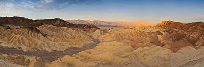

Panoramic Photography
Panoramic photography, also known as wide format photography, is a special technique that stitches multiple images from the same camera together to form a single, wide photograph (vertical or horizontal). The term “panorama” literally means “all sight” in Greek and it first originated from painters that wanted to capture a wide view of a landscape, not just a certain part of it. The first panoramic photographs were made by simply aligning printed versions of film, which did not turn out very well, because it was close to impossible to perfectly align photographs. With the invention of personal computing, advancements in computer software and digital photography, it is now much easier to stitch digital images together using specialized software. In fact, using a proper photography technique and panoramic equipment, it is now possible to create near-perfect panoramas at extremely high resolutions. Some photographers even stitch hundreds of high resolution images to create gargantuan “gigapixel” panoramas. Today, digital panoramic photography is quite popular and common not only among landscape photographers, but also among architectural and cityscape photographers.
Panoramic Photography can get quite complex and expensive, depending on what you are trying to do. For example, creating panoramic images in architectural photography requires camera and lens to be properly calibrated on special panoramic equipment to prevent curved lines, distortions and improper stitches of close objects. At the same time, you can successfully take great landscape panoramic images without investing on any camera equipment, as long as you know how to do it right. In this article, I will primarily focus on taking panoramic images either hand-held or with a tripod, without spending on any other equipment.
While the word “panorama” automatically assumes that it will be a wide horizontal or vertical image, in my opinion, it does not necessarily have to be. If I stitch several images together and it turns out to be a square image, I still consider it to be a high resolution panoramic image. Here is how I define panoramic images:
1) Wide angle panoramas – anything that looks like a wide angle photograph, which covers less than 180 degrees, whether horizontal or vertical. Wide angle panoramas can even look like regular images, except they are stitched from several photographs and therefore would have more resolution.
2) 180 degree panoramas – panoramas that cover 180 degrees from left to right. These types of panoramas look very wide, covering a large area.

3) 360 degree panoramas – panoramas that cover up to 360 degrees. These panoramas look extremely wide and they cover the whole scene in a single, super wide image.
4) Spherical panoramas – also known as “planets”. These are 360 degree panoramas that are converted to a square spherical image using a special post-processing technique.
All of the above panoramas can either be photographed in a single row (meaning one row of vertical or horizontal images) or multiple rows (higher focal length is often used to yield much higher resolutions. Multi-row panoramas often require special panoramic equipment).
Let’s now get to the meat – how do you capture panoramic images that will be used to create a panorama? There are two ways to capture panoramic images:
Taking horizontal shots – an easy method for quick panoramas, where resolution is not important. Here are two sample horizontal shots:
And here is the final stitched panorama
As you can see from the above sample images, the shots I took overlap each other by approximately 50%. In order for any program to be able stitch multiple images together, the images have to overlap each other by a certain margin, so that alignment points are properly identified. The alignment points serve as flags for the stitching algorithm that seamlessly merges the images and cuts out the rest of the image. The overlap margin is a subject of opinion and while some people recommend 20-30% overlap, I personally do it by about 50% (see why below).
Digital Camera – as far as the camera itself, any camera should work, as long as the exposure (aperture, shutter speed and ISO) can be locked. Ideally, you want a digital camera that can shoot in full Manual mode (preferably a DSLR).
Lens – I find zoom lenses to be the most useful for panoramic photography. You can certainly photograph panoramas with fixed/prime lenses, but being able to zoom in and out will give you more options and versatility, especially in difficult conditions where your movements are limited. If you have a DSLR, any wide zoom lens such as Nikon 18-55mm or Nikon 18-200mm should work perfectly fine. I personally use the Nikon 24-70mm f/2.8Glens for most of my panoramas and I have been very happy with the results.
Lens Filters – Recommend taking filters off your lens while shooting panoramas. It is OK to keep a clear filter on, as long as it is not introducing any vignetting to your images on the wide end. Definitely remove a circular polarizer if you have one mounted on your lens, because it will screw up your sky. Here is how bad it can get:
Tripod – a tripod is optional, but highly recommended for best results. Any sturdy tripod should work, but make sure that the head is flexible enough for you to be able to pan from left to right with ease. See my “how to choose and buy a tripod” article if you want to buy a tripod for your DSLR.
Cable Release – optional, but recommended for capturing shake-free images.
Panoramic Setup – a full panoramic setup is ideal for best results, but it is very expensive ($500+). Not recommended for beginners due to complexity of use, but a must-have for professionals that want to sell their images.
Before you start taking panoramic images, you have to change some of the settings on your camera. Here is what I recommend to set in your camera:
Shoot in “Manual” mode – the most important thing in panoramas is consistency of exposures. It is imperative that no matter how bright or dark parts of the scene might be, your images must have the same exposure. If your camera allows locking exposure, you can certainly shoot in other modes, but I suggest to shoot in Manual mode to prevent possible accidents.screwed up many panoramas, assuming that I properly locked my exposure, after which started shooting exclusively in Manual mode for panoramas.
Set your lens to Manual Focus – if you have a DSLR, focus your lens on a distant object (infinity or near infinity), then switch to manual focus. You do not want your camera to change focus every time you take a picture.
ISO – make sure that “Auto ISO” is turned off and set your ISO to the camera base ISO (either 100 or 200).
Aperture and Shutter Speed – for panoramic images, you want to have everything in focus. Therefore, make sure that your aperture is set to a good number that will put everything, including any foreground elements, into perfect focus. Depending on your lens focal length, you should set your aperture to at least f/8, preferably f/10 and higher (depending on how close the nearest foreground object is). Once you set the right aperture, set your shutter speed based on the meter reading as explained below.
Metering – in terms of metering, do not meter off the brightest or darkest areas of the scene, but rather try to find a “sweet middle” and set your shutter speed based on that area for the entire panorama. Take a couple of pictures and make sure that the images are not too overexposed or underexposed for the brightest and darkest parts of the scene.
Lens Focal Length – ultra wide and wide-angle lenses below 24-28mm on FX sensors and 16-18mm on DX sensors typically have heavy distortion and vignetting issues that can make it difficult to properly align and stitch images. For example, when mount my Nikon 24-70mm f/2.8G lens on an FX body such as Nikon D700, I get visible distortion and vignetting at 24mm. Gladly, both distortion and vignetting are very easy to deal with in Lightroom 3 Lens Correction, but if Idid not use Lightroom or some other tool to automatically correct these lens problems, I would probably skip the 24mm focal length for shooting panoramic images. Typically, the focal lengths I use the most for panoramas are between 28mm to 50mm on full-frame FX bodies and 18mm to 35mm on DX, depending on the lens.
Shoot in RAW – always recommend shooting in RAW for best results. See my RAW vs JPEG article to see why you should be shooting RAW.
White Balance – set your White Balance to “Auto” when shooting in RAW and change later, if necessary.
Let’s proceed to the fun part – shooting panoramas. Once you have the equipment setup and ready to go, follow these instructions:
Identify the area you want to photograph. The first thing you need to do, is identify what you want to capture. The best candidates for panoramic images are overlooks, i.e. standing on the top of a mountain or hill, or looking down from an elevated area with no near objects. Avoid shooting panoramas with trees, bushes and other objects in the foreground, unless you have special calibrated panoramic equipment. If you are shooting a scene that is far away from you, the panorama will stitch perfectly, because the software will not have to deal with parallax errors.
Watch for wind and other moving objects. Wind can move tree leaves, grass, water and sand in different directions, which will spoil your panorama. Only shoot in windy conditions when the wind strongly moves everything in one direction. Avoid taking pictures of moving water waves.
If you will be using a tripod, set the tripod on a firm surface and level it. Once it is leveled, mount your camera on the tripod horizontally or vertically and firmly tighten it. Make sure that you can freely pan the camera from one side to another without letting it change any angles. Try to watch for alignment errors by matching the lines in your viewfinder with the horizon.
If shooting hand-held, keep the camera close to your eye and look through the viewfinder instead of the back LCD. Pan from left to right and see whether you can keep the camera straight and aligned against the horizon.
Set your camera settings as shown above and make sure that the exposure is fully locked.
Check camera focus and make sure that autofocus is disabled.
Note the starting point and ending point you will be photographing and visually remember both.
Take a single picture and see if the image looks good on the back LCD. If the image looks good, you are ready to shoot. If it doesn’t, check your exposure settings and make changes, if necessary.
Point your camera at your starting point on the left and take the first picture. Before you move the camera, remember where your center focus point inside your viewfinder is pointing, then start moving the camera to the right, until that point is at the center edge of the frame. This basically means that you will be overlapping your new image with the first one by approximately 50%. Take a picture and repeat this process until you get to the end point. Remembering where the center focus point is at relative to the scene is the easiest and safest way for me to make sure that the images overlap enough for post-processing software to be able to stitch them later. You can certainly overlap them by a smaller margin and decrease the total number of images, so it is totally up to you on how you want to do this. Just make sure that the images overlap by at least 20% and there are visible stationary objects that will allow the stitching program to identify them and connect them later.
If shooting hand-held, stand in one spot, keep your elbows close to your body and rotate only the upper part of your body, keeping the camera close to your head at all times. Imagine that your legs are a tripod and your upper body is a tripod head. This will minimize the effect of parallax on your images. If you have any nearby objects and you want to try to minimize parallax errors, try the following technique: using your left thumb and index fingers, hold the middle of the lens and try to take pictures while not moving your arm (your body needs to remain still). This is difficult to do because you will not be able to look through the viewfinder, but not impossible :) I have taken a few panoramic images this way and they stitched perfectly! Each lens is different and the entrance pupil (which is the point where close and distant objects keep their relative positions when the lens is rotated) location also varies depending on mechanical and optical characteristics of the lens. Your two fingers need to hold the bottom of the lens where the entrance pupil is (not the nodal point like many incorrectly assume) and the camera needs to rotate around it.
Once you are done taking the pictures, visually inspect all images on the LCD at least once to make sure that you do not have any problems with your setup.
The easiest and quickest panoramas can be done by hand-holding your camera. Believe it or not, but most of my panoramas are done hand-held! They might not be as perfect as I want them to be in some cases, but they are still darn good – good enough to print on large paper. Try out the above and see how it works out for you.
If you want to get serious with panoramas, you should invest in a good panoramic setup, which will allow you to take pictures without worrying about parallax issues. There are plenty of different solutions out there and the most popular ones are by Nodal Ninja, Manfrotto and RRS, the latter being the number one choice for professionals. With a good panoramic head, you can have the camera setup rotate around the entrance pupil of the lens and take perfect single-row or multi-row panoramas that will stitch without any problems.
Once you are done taking the pictures, you then need to stitch them using specialized software that is capable of handling panoramas. I will only show how to use Photoshop and PTGui, but you are more than welcome to try other panoramic tools.
Stitching panoramas in Photoshop is super easy. If you use Lightroom, simply select the images and then right click, “Edit In”->”Merge to Panorama in Photoshop…”. If you do not use Lightroom, simply open up Photoshop and then go to “File”->”Automate”->Photomerge…”. A dialog box will come up that looks like this:
The images will automatically show up if you use Lightroom. If you do it from Photoshop, simply click “Browse” and select the images to be merged into a panorama. Make sure that “Blend Images Together” and “Geometric Distortion Correction” are checked, then click OK. This will start the stitching process, which can sometimes take a long time, depending on the number of images and their size. Once the process is completed, all you have to do is crop the image and you are all set!
Besides Photoshop, there are plenty of different panoramic tools out there and PTGui is certainly the most popular one. I have been using it for years and I really like it, although I must admit that Photoshop does a better job at stitching problematic panoramas. Once you open PTGui, click on the “Load images…” button, select the images you want to stitch then click “Open” to open the images within PtGui. Once the images are fully loaded, click the “Align images…” button and let PTGui calculate the connecting points. Once the process is complete, you will see a new window that looks like this:
Select the right projection for your panorama then return to the main screen and click the “Create Panorama…” button, which will take you to a separate tab. Set the right size and format of the image and click the “Create Panorama” button to start the stitching process.
PTGui has a lot more stitching options than Photoshop and you can customize pretty much anything, even manually set control points and select various stitching algorithms.
The biggest challenge with panoramic photography is stitching problems due to parallax errors. I highly recommend reading the Wikipedia article on parallax to fully understand why it presents such a big problem for photography. Once you learn the right ways to take images and minimize parallax, you can start taking great panoramic images!